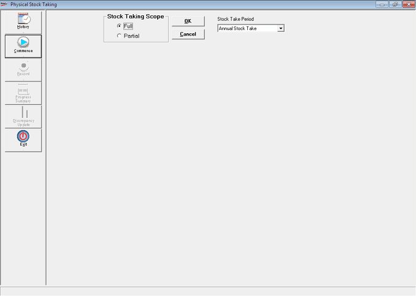
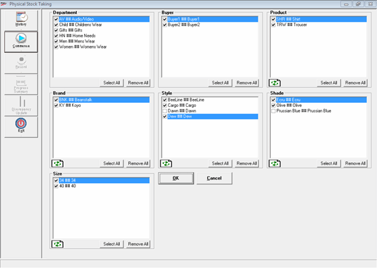
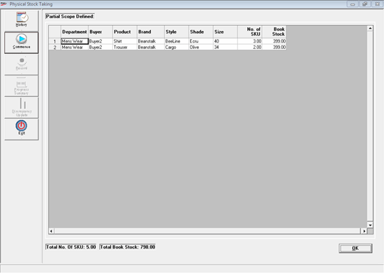
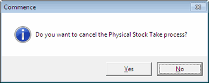

This option is used to select Full or Partial Stock Taking Scope for the physical stock taking.

Stock Taking Scope
It is the process of declaring/ selecting the Items for the Physical Stock Taking. Item declaration can be done for Super Classification1, Super Classification2, Class1, Class2, SubClass1, SubClass2 and UOM/ Size/ Pack.
Stock Take Period: Select the period Annual, Half Yearly, Quarterly or Monthly for Stock Take from the list.
The entire Physical Stock Taking Process is based on the scope defined here.
FULL
All the items are selected in the Scope.
If no transactions are present (new company), then the option Open Stock Loading is activated.
If any transaction is present, then the option Clear Neg Stock, Clear Non Rec Stock and Discrepancy Update are activated.
Item classifications are displayed as shown:

Super Classification 1 - Unit
Super Classification 2 - NA
Classification 1 - Product
Classification 2 - Brand / Make
Sub Classification 1 - Model / Style
Sub Classification 2 - Shade / Color
UOM/ Size/Pack Classification - Size
Note: You can individually select different items under the above classification for partial physical stock take.
Refresh: Click to filter the Items for the selected classification. Also, items in the next level classifications are cleared.
Select All: Click to select all the Items related to each classification.
Remove All: Click to clear Items already selected.

On clicking OK, other applicable processes get activated as per user permission.
Commence button is changed to Cancel Process button.
You can cancel the current physical stock taking scope defined by clicking on the Cancel Process before the process of Open Stock Loading or Discrepancy Updation is executed.
Click Cancel Process to clear all the physical stock recorded and a new Physical Stock Taking Scope can be entered.
To include any newly added items (present in the defined scope) already in the stock take process, click Cancel Process.
The Commence message window is displayed.

Click No.
Refresh: To include the newly added items (present in the defined scope), in the stock take process.
View Partial Scope List: To view the list of items under the defined partial scope. You can view this option only when Partial Stock Taking Scope is selected.
Note: The cancelled scope does not appear in the History.
The items which are under the defined Physical Stock Taking Scope cannot be used in Billing. But once the Opening Stock Loading or Discrepancy Updation is done, then those items can be used for Billing
Items which are not under the defined Scope can be used for any transactions.